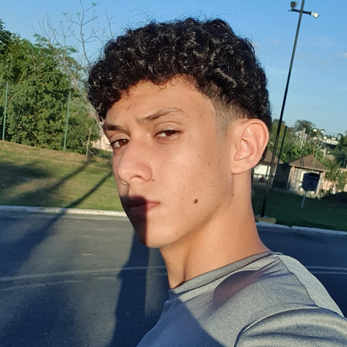

- Home
- >
- Currículo
Currículo
Dados Pessoais

Nome:
Pedro Lucas Crisp
Data de Nascimento:
08/11/2004
Residência:
Taubaté-SP, Brasil
Idiomas:
Português (Nativo)
Inglês
Sobre Mim
Iniciei meus estudos na área em 2022, quando ingressei na Universidade Federal de Itajubá, a qual estou até hoje. Nesse sentido, curso Engenharia de Computação, que me identifico e gosto muito.
Durante o primeiro ano de faculdade, obtive uma base sólida em programação, dominando a linguagem C e Haskell, com experiência na área de Estrutura de Dados, Programação Funcional e Sistemas embarcados.
Em 2023, decidi me aprofundar pois compreendi que é esse ramo que me interesso e desejo trabalhar. Assim, ganhei experiência em C++ e Java, e comecei a praticar para a Maratona de Programação (programãção competitiva). Além disso, faço parte da Asimov Jr, empresa Jr de desenvolvimento de soluções tecnológicas, a qual me proporciona muito aprendizado no setor do desenvolvimento.
Educação
2022-Em andamento
Engenharia de computação - UNIFEI
2022
NDG Linux Unhatched - Cisco
2023
Git e Github - Udemy
2023
Typescript - Udemy
Experiência de Trabalho
2022-Em andamento
Desenvolvedor - Asimov Jr - Itajubá
← Voltar ao início